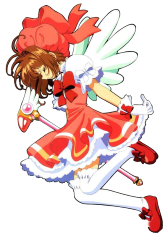
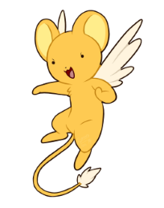
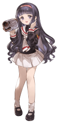
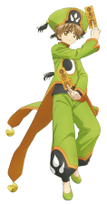
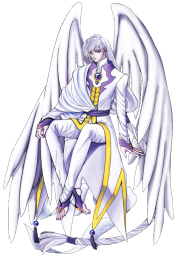

-
Sakura
HP 800
Descrição
A personagem principal da série, cujo objetivo é capturar todas as cartas Clow. Ela estuda na escola Tomoeda, onde também é líder de torcida. É atraida por Yukito, amigo de seu irmão, por causa dos poderes mágicos do rapaz. Shaoran também é, mas isso não significa que eles estão apaixonados por Yukito. Na verdade, eles estão apaixonados é um pelo outro.
-
Kerberus
HP 700
Descrição
O guardião do lacre das cartas Clow, apelidado carinhosamente de “Kero”. Ele ajuda Sakura a capturar as cartas e a ensina sobre seu funcionamento. Ele geralmente assume a forma de um bichinho de pelúcia para despistar os amigos e irmão de Sakura. No final da primeira temporada, após a carta Fogo (The Fire) e Terra (The Earth) serem recuperadas, ele volta à sua forma original, parecida com um leão alado.
-
Tomoyo Daidouji
HP 100
Descrição
A melhor amiga de Sakura, que gosta muito de filma-lá e de vesti-la com roupas diferentes a cada aventura. Gosta de cantar e tem uma voz muito bonita. Seus sentimentos por Sakura são às vezes exagerados, tornando a série um ícone do gênero.
-
Syaoran Li
HP 700
Descrição
Um card captor rival de Sakura, e descendente do criador das cartas. Shaoran veio de Hong Kong em busca das cartas Clow, mas deparou-se com Sakura, que já havia capturado algumas delas. Ele passa a estudar na mesma escola de Sakura e Tomoyo e a ajudá-las na captura das cartas.Ele luta Kung Fu entre outras artes marciais chinesas, e se utiliza não só das cartas Clow, como também da magia do Feng Shui com sua espada e amuletos.
-
Eriol Hiiragizawa
HP 700

Descrição
Uma reencarnação do Mago Clow, criador das cartas Clow. Ele surge na segunda metade da história (a segunda temporada do anime e do mangá) para ajudar Sakura a converter as cartas Clow em cartas Sakura - um reflexo do poder mágico dela - para que as cartas não “morram”.
-
Mago Clow
HP 900

Descrição
O Mago Clow é o criador das cartas Clow, um conjunto de cartas com poderes mágicos. É também o criador de Yue e Kerberos, que têm o dever de proteger as cartas. Ele é jovem, assim como Sakura. Clow Reed foi o mago mais poderoso e viveu a muito tempo atrás, quando morreu, deixou um livro guardado por um guardião contendo umas cartas mágicas criadas por ele mesmo, se essas algum dia escapasse, um desastre cairia sobre a terra, uma vez que Sakura abriu o livro e liberou as ditas cartas, teve de recapturá-las para que isso não acontecesse. Clow era um mago um pouco louco. Quando reencarnou, o fez em 2 pessoas, o pai de Sakura e Eriol.
-
Yue
HP 800
Descrição
É um dos guardiões das cartas Clow, junto a Kero. Quando Kero é o eleitor que escolhe um candidato que se transformará no próximo mestre Clow, Yue é o juiz que tem o dever de testar o candidato. Ele é frio e reservado, e muito mais sério e intimidador do que Kero. Depois de Sakura ter ganhado o Juizo Final, ele e Kerberus decidem continuar em suas formas antigas para ajudar Sakura até que ela esteja realmente pronta para seguir como dona das Cartas e dos Guardiões.